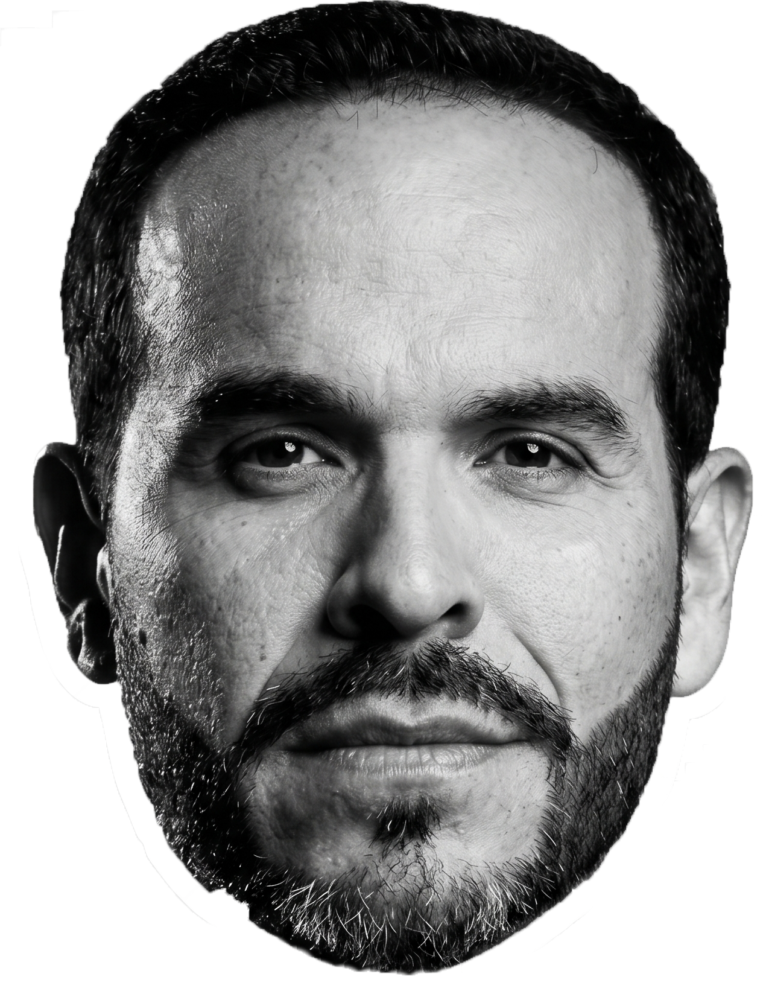

Análisis de lenguaje · Colombia 2026

Analizamos sus discursos, cómo organizan sus ideas y qué palabras escogen, para entender no lo que dicen, sino cómo lo piensan.
Cepeda: complejo y extenso. Abelardo reduce a certezas puntuales.
Cepeda escribe oraciones casi el doble de largas que Abelardo (17 vs. 10 palabras de mediana), con más cláusulas subordinadas por oración (1.35 vs. 0.83) y casi tres veces más oraciones que superan las 30 palabras (22.6 % vs. 7.8 %). Usa también tres veces más modalizadores epistémicos —palabras que gradúan la certeza, como «probablemente» o «es posible»— (6.23 vs. 2.01 por mil). Curiosamente, la densidad de subordinadas por cada mil palabras es casi idéntica en los dos (~62 vs. ~60), lo que sugiere que Abelardo distribuye la misma complejidad relativa en oraciones mucho más cortas.
Los dos hablan desde el yo. Cepeda convoca; Abelardo interpela.
El dato más sorprendente: los dos candidatos son igualmente yo-céntricos —Cepeda el 68.8 % del tiempo, Abelardo el 71.6 %—. La diferencia está en hacia dónde apunta cada uno. Cepeda usa siete veces más el «nosotros» que Abelardo (10.4 % vs. 1.4 %) para construir comunidad; Abelardo interpela más directamente al oyente con «ustedes» (17.7 % vs. 14.6 %). Los dos hablan en presente de forma casi idéntica (77.3 % vs. 78.5 %). Cepeda gradúa más su certeza —tres veces más modalizadores epistémicos— y tiene el doble de nominalizaciones, lo que da a su discurso mayor densidad conceptual.
Ambos hablan desde la esperanza. Cepeda lo dice con más carga emocional.
Contra lo esperado, los dos candidatos tienen valencia positiva —Abelardo incluso más que Cepeda (+0.42 vs. +0.24)—. Pero Cepeda expresa esa positividad con casi cuatro veces más intensidad emocional (3.8 vs. 1.08 palabras cargadas por cada cien). En ambos domina la anticipación —proyección hacia lo que viene—, más pronunciada en Abelardo (35.6 % vs. 27.9 %). El campo semántico de Abelardo es abrumadoramente el orgullo nacional (48.6 % de su carga afectiva); el de Cepeda es más diverso: esperanza y futuro (22.2 %), traición y enemigo (18.9 %) y orgullo (15.6 %). Abelardo tiene agencia mayoritariamente pasiva (51.6 %); Cepeda es ligeramente más activo (55.4 %).
Cepeda explora y busca. Abelardo insiste y llega al punto.
Cepeda mantiene mayor diversidad léxica a lo largo del discurso (MTLD 67.5 vs. 52.2), lo que significa que tarda más en repetirse. La paradoja de Abelardo: usa más palabras que aparecen una sola vez —más hapax por cada cien (16.24 vs. 14.06)—, pero su vocabulario se agota antes. Introduce términos nuevos al inicio y luego concentra el texto en un conjunto reducido. Las tasas de repetición de las 20 palabras más frecuentes son prácticamente idénticas (0.059 vs. 0.057), lo que sugiere que ambos dependen de un núcleo de términos clave con la misma intensidad.
La síntesis visual de los dos discursos: forma, densidad, color y disposición de cada partícula traducen un dato real. Cepeda en píldoras de baja intensidad emocional y alta complejidad sintáctica; Abelardo en píldoras concentradas en el presente y el orgullo. Pasa el cursor —o el dedo— para activarlas.